Susami, Wakayama: things to do, food and stays
Susami · Wakayama
Susami
Highlighted on the Wakayama map.
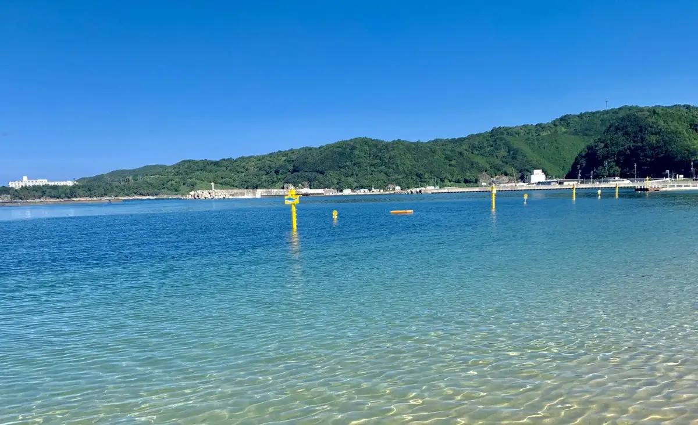
Stay
南紀すさみ温泉 ホテルベルヴェデーレ
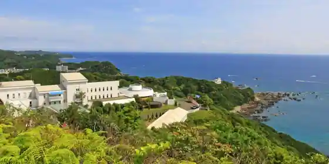
Nanki Susami Onsen Hotel Beruvedere
Hotel at Nankisusami Onsen in Susami with scenic views.
TUZUMI WAKAYAMA SUSAMI
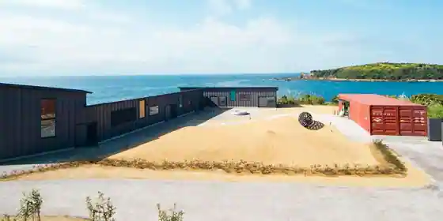
TUZUMI WAKAYAMA SUSAMI
Inn in Koju, Susami with scenic views.
フェアフィールド･バイ･マリオット･和歌山熊野古道すさみ
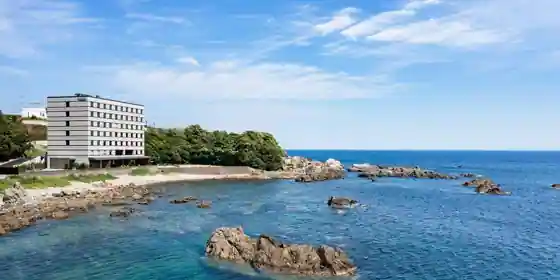
Feafirudo Feafirudo Bai Bai Mariotto Mariotto Wakayama Kumano Kodo Susami
Inn in Koju, Susami with scenic views.
√2
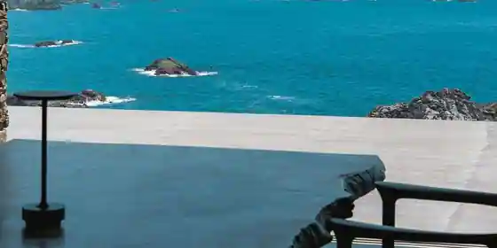
2
あきば何求庵
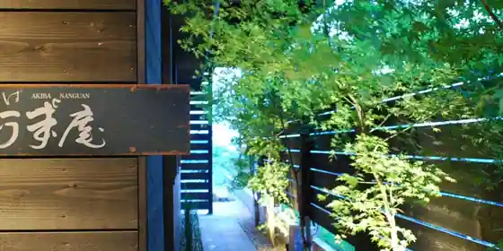
Akiba Nani Kyu Iori
Inn in Susami with local seafood dinners.
温泉民宿 かわべ
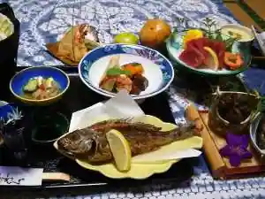
Onsen Minshuku Kawabe
海辺を散策できる温泉宿 サンセットすさみ（旧国民宿舎）
Umibe Wo Sansaku Dekiru Onsen Yado Sansetto Susami (Kyugoku Minshuku Sha)
Family-run minshuku at Wosansakudekiru Onsen in Susami with scenic views.
PAWDICE
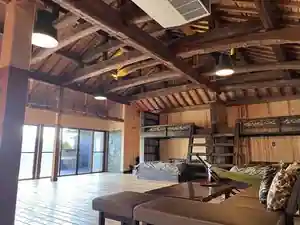
PAWDICE
フェアフィールド・バイ・マリオット・和歌山熊野古道すさみ
Feafirudo Bai Mariotto Wakayama Kumano Kodo Susami
ＴＵＺＵＭＩ ＷＡＫＡＹＡＭＡ ＳＵＳＡＭＩ
TUZUMI WAKAYAMA SUSAMI
海のお宿
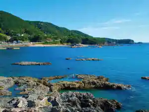
Umi No Yado
Inn in Koju, Susami with scenic views.
Dining
BUSH
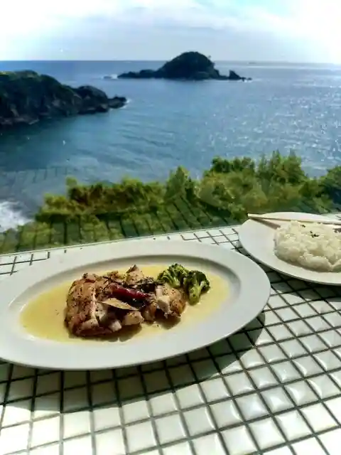
BUSH
すさみ食堂
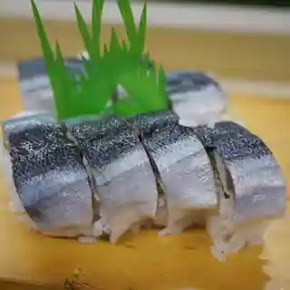
Susami Shokudo
南紀すさみの恵み食堂 蒼海
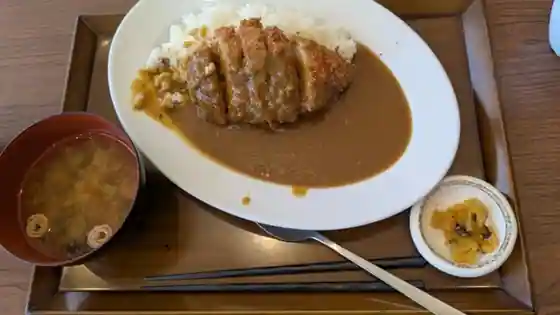
Nanki Susamino Megumi Shokudo Sokai
道の駅 すさみ
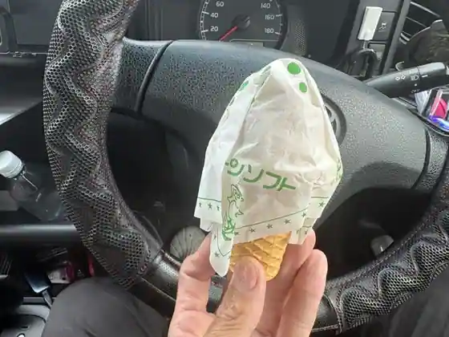
Michi No Eki Susami
お食事処 みき食堂
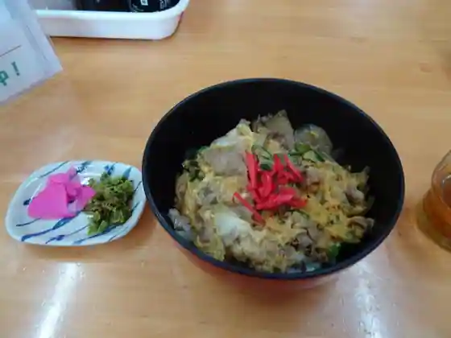
O Shokuji Tokoro Miki Shokudo
すさみカフェ
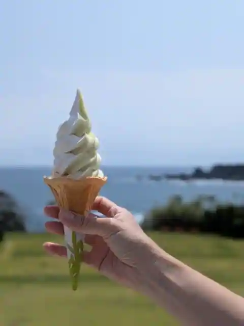
Susami Cafe
サンセットすさみ
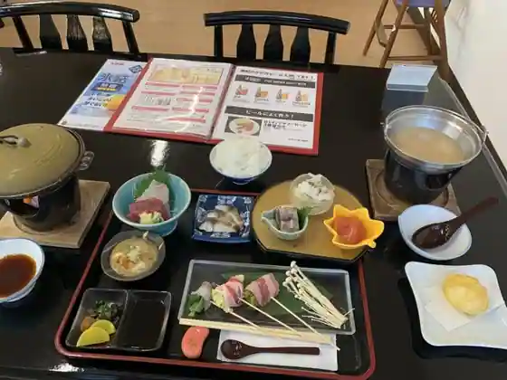
Sansetto Susami
しのぶ
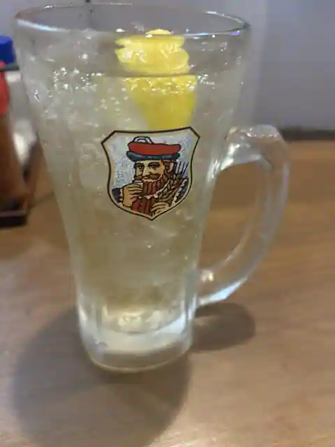
Shinobu
マルカン
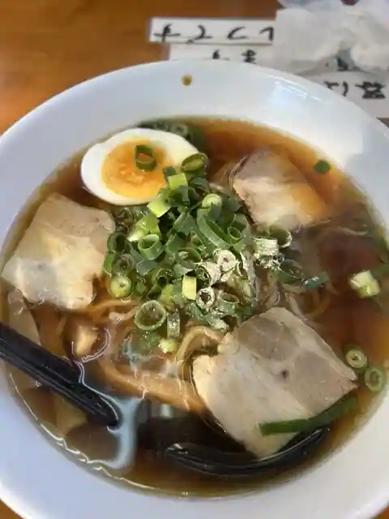
Marukan
花かいろう
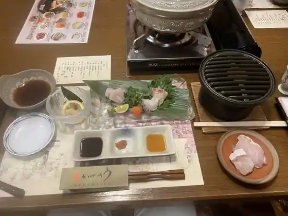
Hana Kairo
すさみ 鮨 霧
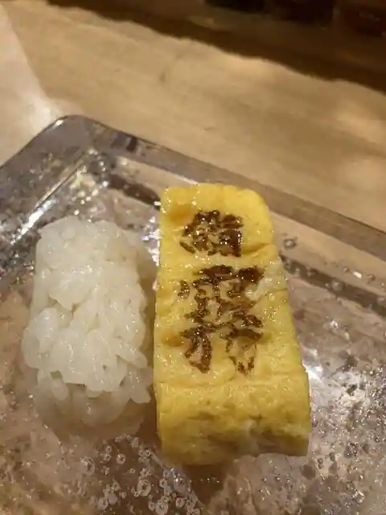
Susami Sushi Kiri
太公望
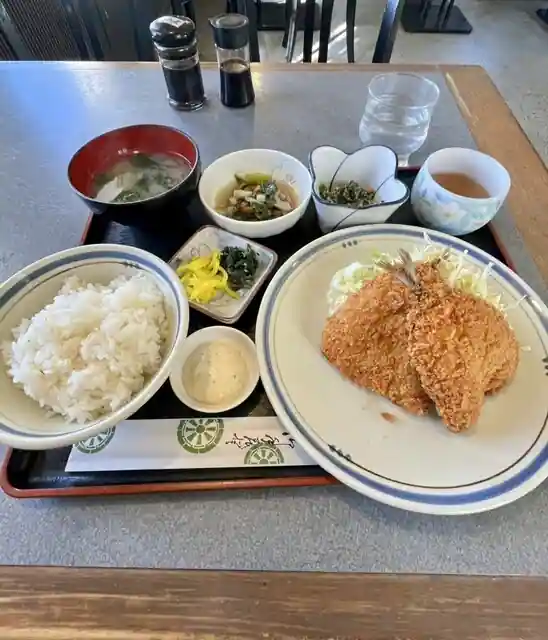
Taikobo
カフェ パノラマ
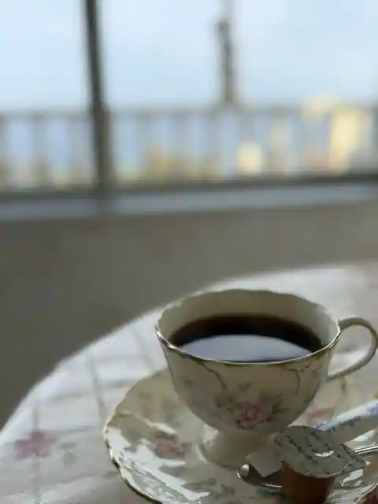
Cafe Panorama
フェアフィールド･バイ･マリオット 和歌山熊野古道すさみ
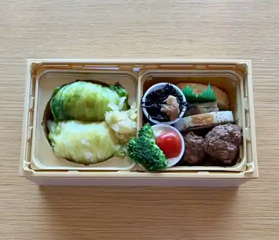
Feafirudo Feafirudo Bai Bai Mariotto Wakayama Kumano Kodo Susami
すさみ夜市
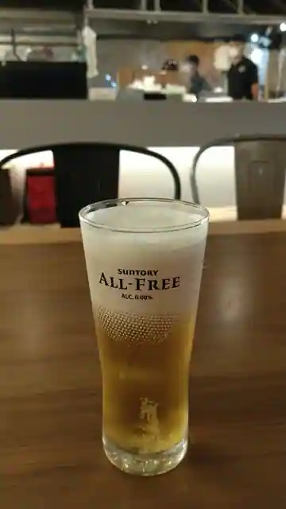
Susami Yoichi
北京飯店
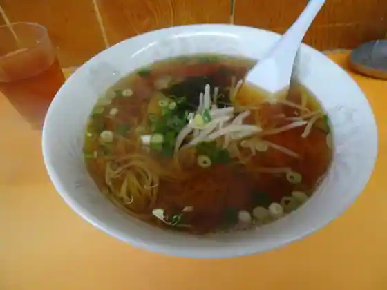
Pekin Meshi
仏坂 和三郎茶屋
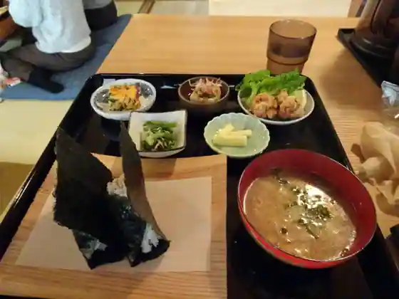
Hotoke Saka Wasaburo Chaya
串かつ 一寸法師
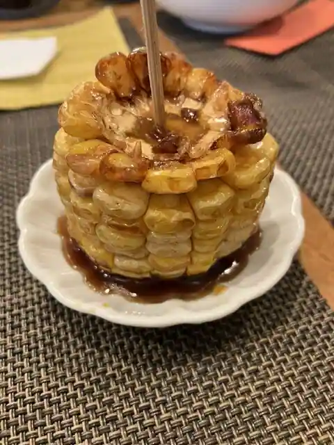
Kushi Katsu Issunboshi
やまにし食堂
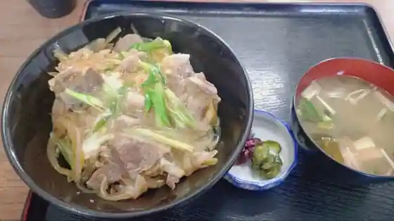
Yamanishi Shokudo
Sea coffee&espresso
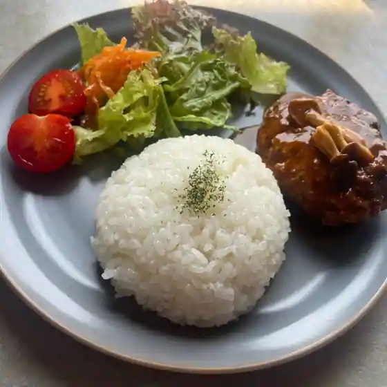
Sea coffee&espresso
カレータナカ
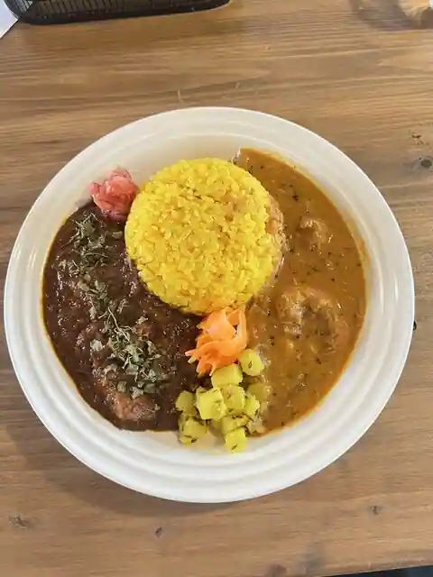
Karetanaka
コーヒースタンド ヤップ
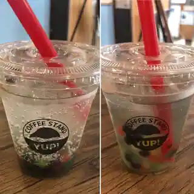
Coffee Sutando Yappu
Sights
Roadside Station Susami
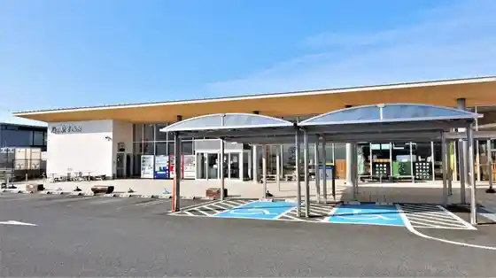
Susami Beach
Ebi to Kani no Aquarium
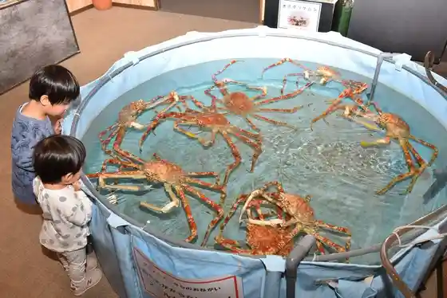
Susami Hakkei
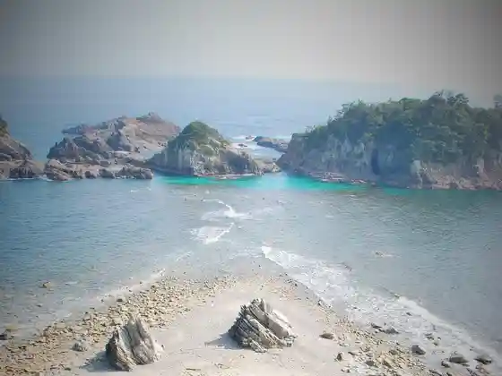
Nippon Doyo no Sono
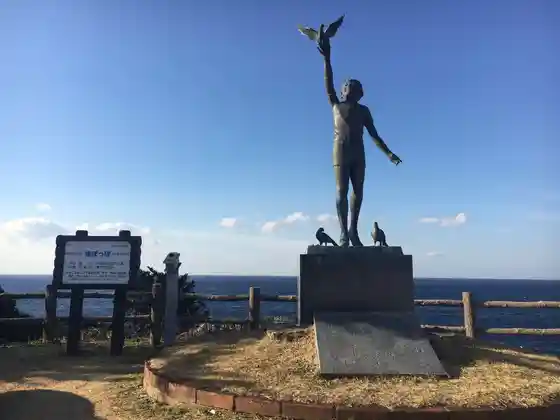
FRONT110 Campground
Susami Ritsu Folk History Museum